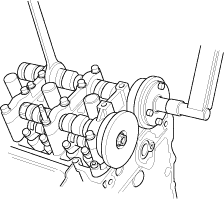
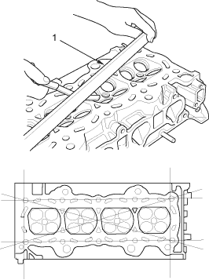

Installation:
- Install the VTC actuator and exhaust camshaft sprocket.
- Apply engine oil to the threads of the VTC actuator mounting bolt and exhaust camshaft mounting bolt, then install them.
- Hold the camshaft with an open-end wrench, then tighten the bolts.
Specified torque:
VTC actuator mounting bolt:
113 Nm (11.5 kgf/m, 83 lbf/ft)
Exhaust camshaft sprocket mounting bolt:
72 Nm (7.3 kgf/m, 53 lbf/ft)

- Install the cam chain (see page 6-16).

- Remove the cylinder head (see page 6-25).
- Inspect the camshaft (see page 6-31).
- Check the cylinder head for warpage. Measure along the edges, and three ways across the centre.
- If warpage is less than 0.05 mm (0.002 in.) cylinder head resurfacing is not required.
- If warpage is between 0.05 mm (0.002 in.) and 0.2 mm (0.008 in.), resurface the cylinder head.
- Maximum resurface limit is 0.2 mm (0.008 in.) based on a height of 104 mm (4.09 in.).
Cylinder Head Height:
Standard (New):
103.95 – 104.05 mm (4.093 – 4.096 in.)

- PRECISION STRAIGHT EDGE